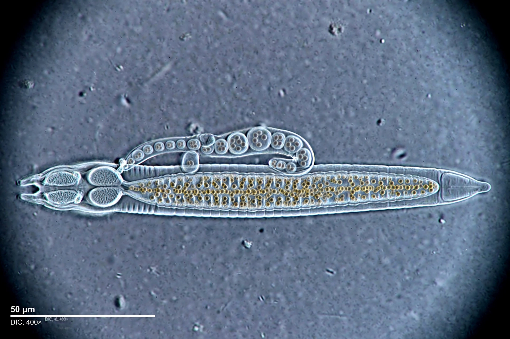

| Caenorhabditis elegans | |
|---|---|
| Phylum | Nematoda |
| Order | Rhabditida |
| Family | Rhabditidae |
| Length | ~1 mm (adult) |
| Cells | 959 somatic cells (hermaphrodite); 302 neurons |
| Genome | ~100 Mb, ~20,000 genes; sequenced 1998 |

Caenorhabditis elegans is a free-living, transparent nematode (roundworm) about 1 mm long that lives in temperate soil environments, feeding on bacteria. Since Sydney Brenner adopted it as a model organism in the 1960s–70s, it has become one of the most intensively studied animals in biology, central to research on development, neurobiology, ageing and programmed cell death.
The species exists mainly as self-fertilising hermaphrodites, with rare males. The adult hermaphrodite has exactly 959 somatic cells, whose entire lineage from fertilised egg was mapped by John Sulston and colleagues — every cell division is essentially invariant between individuals. Its nervous system of 302 neurons was the first to be completely mapped (the connectome work of White et al., 1986). Under starvation or crowding, larvae can enter the stress-resistant dauer stage. The worm is transparent, allowing direct observation of cells in the living animal; it can also be frozen indefinitely and revived.
C. elegans was the first multicellular organism to have its complete genome sequenced (1998). Studies of its development revealed the genetic programme of apoptosis (programmed cell death), recognised by the 2002 Nobel Prize to Brenner, Sulston and H. Robert Horvitz. Research in the worm also produced the first demonstrations of RNA interference (Fire and Mello, Nobel Prize 2006) and the practical use of green fluorescent protein as a gene-expression reporter (Chalfie). Mutants affecting insulin/IGF-1 signalling, such as daf-2, can live twice as long as normal, making the worm a leading model for the biology of ageing.